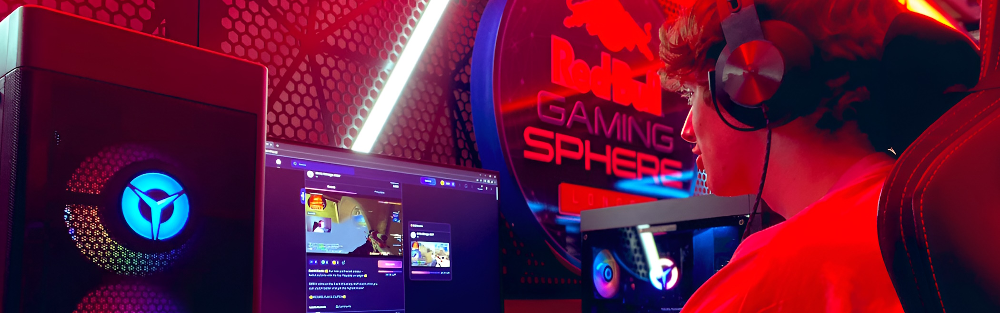
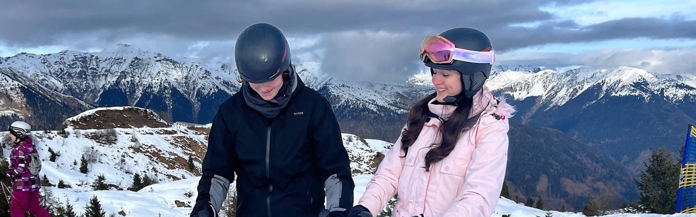
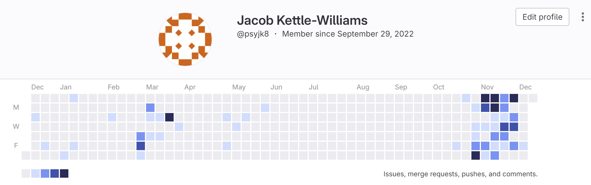

What do I do for fun?
Gaming and Social Media
The photo above is of me at the Red Bull Gaming Sphere in 2022, modelling a new website called Ludeo, which was a mod for Counter Strike: Global Offensive, which allowed players to relive their favourite moments from competitive matches.
I've played video games ever since I was a kid, and I've always had an affinity for competitive games, especially shooters. However, this is very different to the first games I got into, such as Minecraft on the Xbox 360 and FIFA. In 2016, I built my first gaming PC, which I used to, you guessed it, play more Minecraft! Using a keyboard and mouse didn't come naturally , and so I spent a lot of time practicing in simple games, such as Minecraft, as well as 'surfing' in CS:GO, which is a game mode that I won't go into detail about here...
After a few years, with the arrival of a new game called Fortnite, which took over the gaming landscape, I decided to try my hand at competitive gaming. I started playing in online tournaments, as well as competitively with friends in a team. This was a great experience for me, as it taught me a lot about teamwork, communication and leadership. I even won a LAN tournament in 2019, which was a great experience for me, and I got to meet some great people who I still talk to today.
Nowadays, at the old age of 20, the window of opportunity for competitive gaming is coming to a close, and so I have decided to focus on other things, such as my degree, and my career. However, I still love to play video games, and I still play with my friends from time to time. I am currently enjoying Valorant in my spare time, as well as other party games such as Lethal Company, and often go back to my roots, playing a singleplayer Minecraft world which I have been playing for over 3 years now.
Sports and Gym
The above image is myself on a ground tour in 2014 at the Emirates stadium. As this image shows, football is a large part of my life. I played football since I was a kid, and although I wasn't very good, today I still enjoy the sport as a spectator. For my entire life I have been a huge Arsenal fan, which has been tough for the last few years, but since the Mikel Arteta renaissance, watching the team perform has been an incredible experience.
I frequently go to the Gym, which has become a huge part of my life and is the foundation of how I plan my day-to-day activities. I aim to go to the gym 4 times a week, as well as swimming or climbing once a week to keep active.
Language Studies
The image above is me skiing with my partner, Sian, in Northern Italy in December 2022. Sian is half Italian, with her mother moving to the UK in her mid twenties, where she met Sian's father. Sian has always been very proud of her Italian heritage, and so I decided to learn Italian in my spare time so that I could speak to her family. Unfotunately, due to their proximity to the Northern border, they speak two dialects: Friulano and Carnico, which are mixtures of Italian, German and Slovenian (although I am not sure how accurate this is!). Nevertheless, I have been learning Italian for over a year on Duolingo in my spare time and have racked up a streak of over 500 days! Sian è la mia migliore amica e non vedo l'ora di condividere altre avventure in Italia con lei.
Due to my course allowing me to take 10 credits outside of the school of Computer Science, next semester I am taking Beginner Italian lessons, which should help me grow my confidence with speaking the language, as well as teach me some new vocab! Learning Italian has been an incredible experience, as it taught me a lot about my own determination, as every word and phrase that I have learned so far, I did so because I wanted to, not because I had to. I have also learned a lot about the Italian culture, and have enjoyed every trip I have been.
Skiing last year was the first time I ever went, and it was an incredible experience! I had never participated in a sport like it, and I was surprised at how quickly I picked it up. I am looking forward to going again this year, and hopefully I will be able to progress in difficulty and try some more challenging slopes!
Programming Portfolio
Despite programming being a big passion of mine, I have rarely had the opportunity or time to work on a long-term project. This is something I aim to remedy in the future, with participation in open source GitHub projects, as well as working on some of my own. I aim to move some of my GitLab projects over to GitHub, as well as moving some of my old projects, such as my A-Level coursework, over to GitHub.
As you can see from my GitLab portfolio, as I write this on the 10th December 2023, I have been more and more active on GitLab, and have been working on a variety of projects, as well as my courseworks, which I hope to share in the future!
What's that photo on the home page?
The photo of me in the fancy dress, with two of my friends, was taken at the end of Year 13. Throughout my time at secondary school, I participated in two main clubs: the Corps of Drums and the Combined Cadet Force (CCF). The Corps of Drums was a massive part of my life, spending thousands of hours practicing tunes, marching, cleaning kit and performing in front of large audiences. This was great for my self-confidence, as well as my teamwork and leadership skills. I was also a member of the CCF, which taught many skills such as fieldcraft, leadership, teamwork and weapons handling. I played a major role in this, being a senior cadet, and was responsible for teaching the younger cadets, as well as leading them on exercises. I was the Company Sergeant Major, which was an honour for me, and I was responsible for the entire company of 200+ cadets.
In the photo, I am in the middle wearing No.2 dress, and my friends Alex (left) and Senith (right) are wearing the Corps of Drums kit.
Back to Home